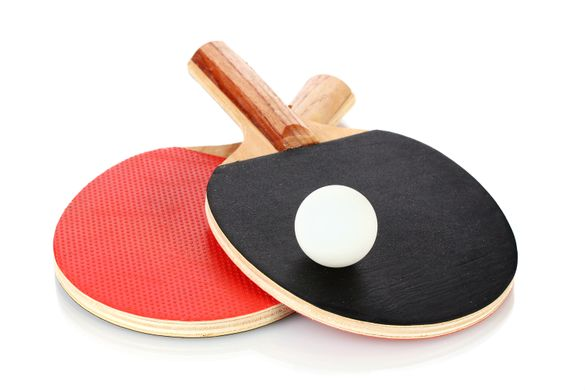

In my free time, I like to play music, hang out with my friends, and read. I frequently go out to play ping pong and watch movies with my friends. I have been playing the trumpet since fifth grade and I recently started focusing specifically on jazz music. Some of my favorite books are "Lord of The Rings" by Tolkien, "Ender's Game" by Orson Scott Card, and "Meditations" by Marcus Aurelius.

Back to home page